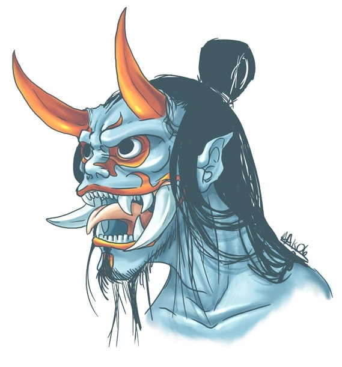
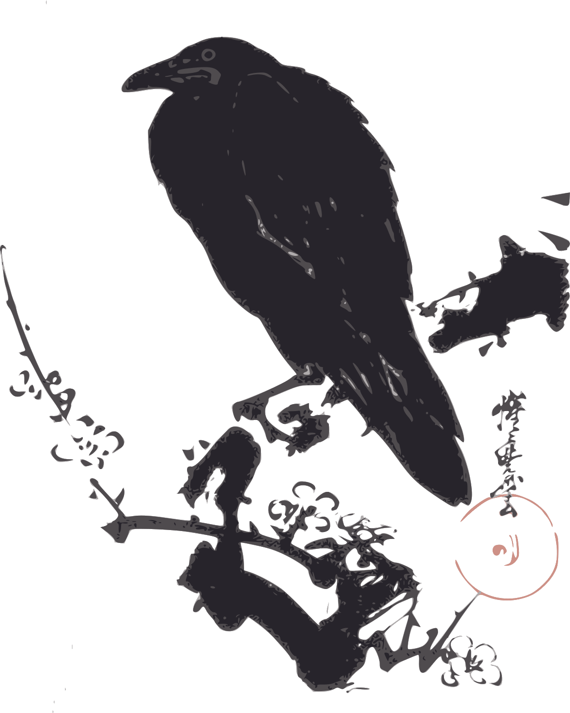
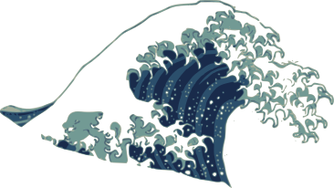
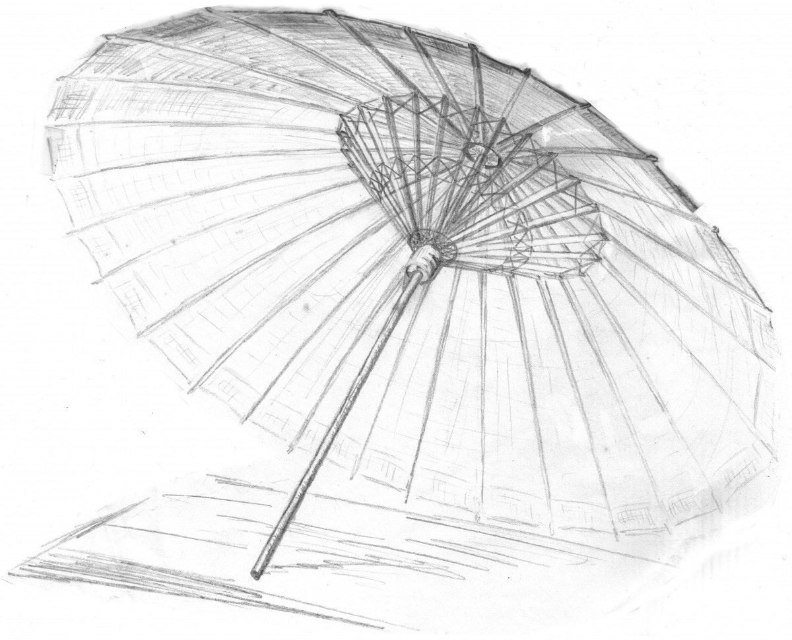
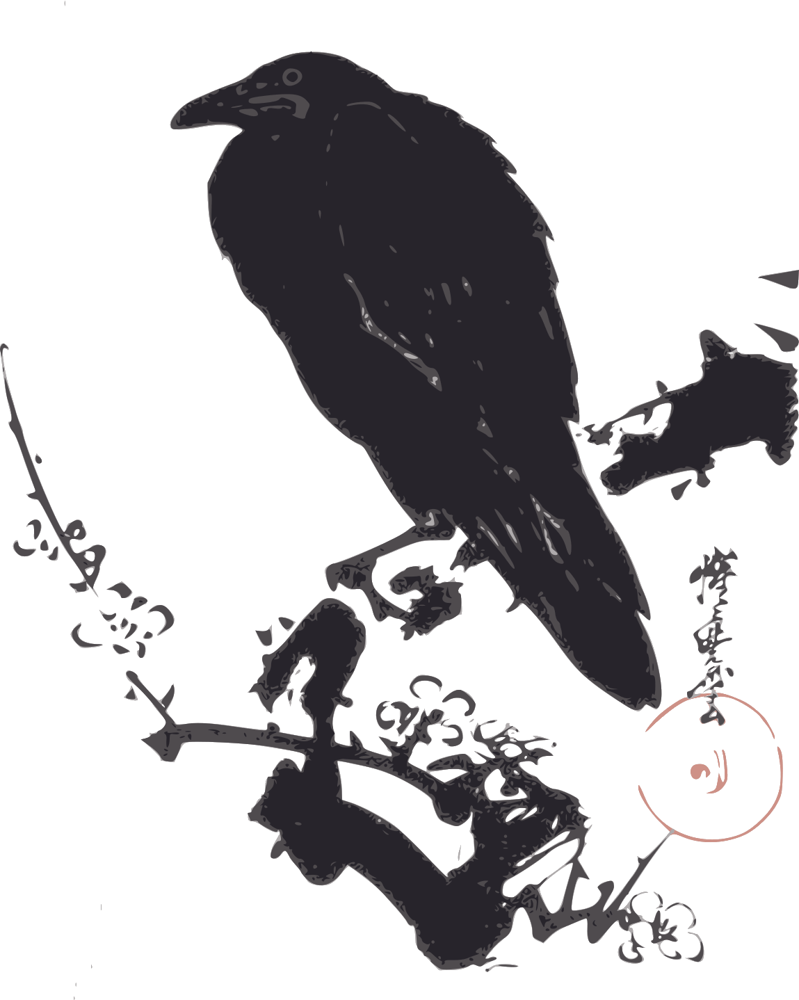
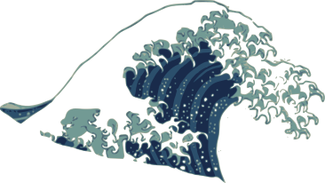
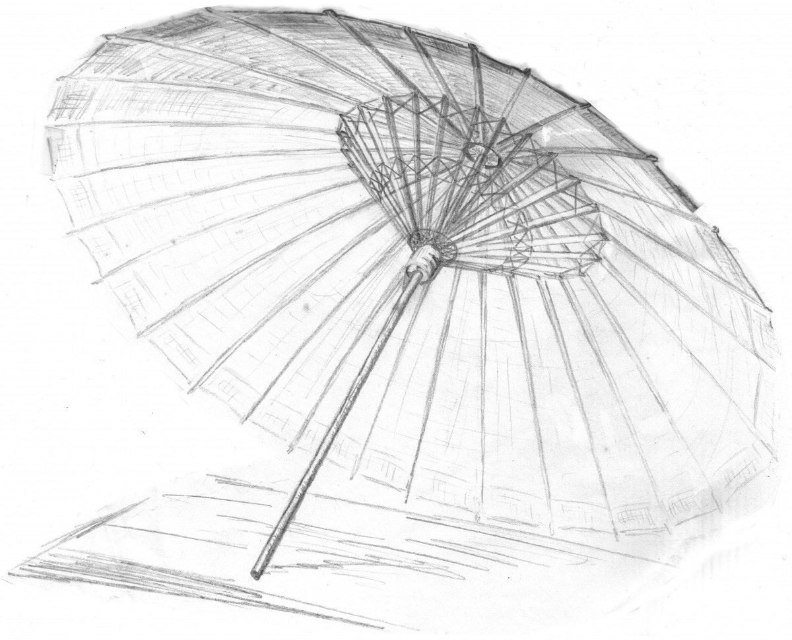

Un jeu de rôle minimaliste inspiré du scénario de Kalwrynn pour initier au jeu de rôle intitulé "Mener en 30min", où l'on joue dans un univers de fantasy inspiré du japon féodal.
Inspirations: Okami, Ori & the blind forest, Mushishi, Usagi Yojimbo, Kung Fu Panda, princesse Mononoke, Naruto...
- Version PDF de ces règles: OriMushi.pdf (6 pages, 1,7 Mo)
-
Feuille de personnage : OriMushi-FeuillePersonnage.pdf (346 Ko)
-
Feuille de personnage "Étendue" : OriMushi-FeuillePersonnageEtendue.pdf
-
Illustrations : OriMushi-illustrations.pdf (12 pages, 13 Mo)
-
Articles sur mon blog à propos de ce jeu : tag ori-mushi @ chezsoi.org
Création de personnage en 5min
- Choisissez votre apparence et un objet spécial (arme, objet magique...) parmi les illustrations, ou inventez-les ! Les objets spéciaux sont des objets magiques ou que leur possesseur maîtrise avec virtuosité.
- Inscrivez sur votre feuille de personnage son nom, son activité et cochez 3 compétences.
L'inventaire de départ des personnages est complètement libre : il s'agit de tous les objets qu'ils souhaiteraient transporter sur eux. Ces objets n'étant pas spéciaux, ils n'octroient pas de dé supplémentaires lors des jets.
Activités
Voici quelques suggestions pour les joueurs, à découper avant la partie :
| Apothicaire : je concocte des remèdes à partir de plantes sauvages. | Conteur : je raconte de manière captivante les plus incroyables histoires. | Marchant : sur ma route, je troque de précieux objets et ingrédients. |
|---|---|---|
| Mushishi : je perçois les esprits de la nature, et m'efforce de les apaiser. | Ronin : samouraï sans maître, je voyage en onorant le code moral du bushido. | Autre : inscris au dos une autre activité de ton choix. |
Jets de dés
1d6 minimum, +1d6 par compétence et Objet Spécial applicables. Selon le meilleur résultat obtenu aux dés :
- ⚅ : c'est réussi !
- ⚄ : c'est réussi mais...
- ⚃ : c'est raté mais...
- ⚂ / ⚁ / ⚀ : c'est raté
De plus :
- si deux ⚅ sont obtenus : c'est une réussite épique !
- si deux ⚀ sont obtenus : c'est un échec critique
- sur un ⚄ ou ⚃, le MJ peut également proposer un dilemme : le joueur se voit proposer un choix cornélien entre deux options exclusives. Son personnage peut par exemple obtenir quelque chose au prix d'un sacrifice, ou bien se rabattre sur une réussite partielle.
- actions difficiles : lorsque le personnage d'un joueur tente d'accomplir une véritable prouesse, une action à la limite de ses capacités, le MJ peut alors indiquer qu'au moins deux dés de valeur ⚄ ou ⚅ sont nécessaires pour réussir l'action.
- actions en opposition, comme par exemple un affrontement : un jet est effectué par personnage, celui obtenant le plus de ⚅ l'emporte. En cas d'égalité, on considère les ⚄. Si l'égalité persiste, aucun personnage n'a l'avantage.
- actions conjointes : un personnage assistant un autre à réaliser une action lui octroie un dé bonus, si cette aide est jugée pertinente par le MJ.
Éléments clefs à établir en début de partie
- « L'histoire se déroule dans un japon médiéval imaginaire. Il existe de la magie et des monstres. »
- Le meneur de jeu demandera des jets aux joueurs pour les actions risquées de leurs personnages.
- Les joueurs se connaissent déjà et voyagent ensemble, et c'est d'ailleurs leur objectif commun : explorer le monde ! Ils ont déjà traversé de nombreuses contrées et aidé bien des gens.
Scène 0 - Course poursuite !
Bien que cela rallonge légèrement la durée de la partie, je trouve très judicieuse l'idée de Kalwrynn de commencer in media res.
Je vous suggère donc de commencer la partie en décrivant rapidement un joli décor de chemin de terre sinuant parmi les champs et les herbes folles, par une paisible après-midi printanière, au pied d'une montagne... Où les personnages des joueurs descendent le chemin en pente à perdre haleine, poursuivis par un troll-kappa dont ils ont piétinés le jardin par mégarde ! Cette créature, sorte de taupe humanoïde avec un bec, est fâchée et pas du tout disposée à discuter !
Décrivez aux joueurs les environs pour leurs donner quelques idées d’échappatoire : l'orée de la forêt de bambous, la descente un peu raide vers un lac, les hautes herbes balayées par le vent...
Au terme de cette scène, les joueurs doivent rejoindre le village, par le chemin ou le lac, quitte à faire une ellipse ou à indiquer qu'il s'agit de l'étape suivante de leur voyage, où on leur a vanté une recette locale de poisson frit...
Illustrations
S'inspirant de Sventovia du Grümph, nous vous encourageons à imprimer des images au préalable, pour faciliter l'immersion des joueurs : des illustrations de personnages et ce dont ils peuvent s'équiper (armes & objets).
Vous trouverez dans ce PDF 12 illustrations de personnages des joueurs, 4 de PNJs, 6 de différents objets spéciaux, et enfin une illustration de l'esprit-dragon : OriMushi-illustrations.pdf (12 pages, 13 Mo)
Ambiance musicale
Quelques suggestions de bande sons originales : Mushishi, Okami, Ori and the Blind Forest, Princess Mononoke.
Ori-Mushi au-delà de 30min
Les sections suivantes fournissent de quoi jouer dans l'univers d'Ori-Mushi pour des parties de 2 à 3 heures. Cela signifie :
- des règles supplémentaires de progression / gain d'expérience
- un nouveau scénario
Jutsus
Les jutsus sont des techniques ancestrales permettant de maîtriser une forme de magie.
Il existe plusieurs familles de jutsus :
| Contrôle du sable : modeler du sable pour former toute sorte d'objet, le projeter... | Téléportation : déplacement instantanné à courte distance de soi, d'un objet, d'un adversaire... | Clonage : se dupliquer, dupliquer un objet... |
|---|---|---|
| Hypnose : immobiliser quelqu'un par le regard, le faire parler, lui donner des ordres... | Régénération : soigner une blessure, faire repousser un membre... | Autre : inscris au dos un jutsu de ton invention. |

Employer un jutsu nécessite 1 point de Mana, et un jet de dé. Chaque famille de jutsu a une réserve de Mana associée.
Lorsqu'on maîtrise une famille de jutsu, on peut tenter n'importe quelle technique propre à cette spécialité. On peut aussi devenir expert d'une technique en particulier, et on gagne alors +1 dé au lancer lorsqu'on emploie cette technique.
Certains objet spéciaux rares peuvent conférer +1 dé au lancer pour une famille de jutsu spécifique.

Progression & expérience
-> Clefs
 







Cartes
Si vous aimez avoir un support visuel pour vos parties, voici quelques belles cartes qui peuvent parfaitement servir de support à une partie d'Ori Mushi :
- Bains japonais - Czepeku
- Sanctuaire de la forêt - Czepeku
- Monastère des cerisiers en fleurs - Czepeku
- Cache du Oni - Ferme de riz - Czepeku
Scénario : les disparus du festival du printemps
Licence, sources & remerciements

Ori Mushi a été conçu par Lucas Cimon en février 2020. Ce jeu est placé sous license Creative Commons Attribution 4.0 International.
Ce jeu est diffusé à prix libre. Si vous souhaitez me soutenir, vous pouvez me faire un don sur lucas-c.itch.io. Les fichiers sources ayant permis de générer ce PDF sont disponibles sur GitHub. Cette version est la v1.0.
Je serais ravi d'avoir vos retours si vous jouez à ce jeu ! 🙂 Racontez-moi comment s'est passée votre partie via un commentaire lucas-c.itch.io ou sur mon blog.
Merci enfin aux développeurs des logiciels libres employés pour réaliser ce jeu : le navigateur Firefox, le logiciel de dessin Gimp, l'éditeur de texte Notepad++, le lecteur de PDF Sumatra PDF, le language de programmation Python, les bibliothèques de code markdown-it & Puppeteer.
Polices : Odachi & Xangda Shiny
Illustrations dans ce document :
- Journey to the West par TysonTan - CC BY-SA 3.0
- Noh Demon par weremagnus - CC BY-NC 3.0
- Kuma par HIJODELOPIO - CC BY 3.0
Pour la feuille de personnage :
- Chinese New Year Folk Ornament, Decorative Ying Yang sign & Dragon frame @ freesvg.org - domaine public
Origine des images de OriMushi-illustrations.pdf :
- Pirate Ninja @ publicdomainvectors.org
- Quick samurai sketch par hidanbasher - CC BY 3.0
- Human 4 par Jeff Preston, issu de 108 Terrible Character Portraits - CC BY 3.0
- Tryker femme & Tryker homme - Ryzom - CC BY-SA 2.0
- Alopex redesign concept & Human Alopex par BEEvirus - CC BY-NC-SA 3.0
- Kitty Anime Poilu Bleu & Elf Druide Fantaisie @ pixabay.com
- Komainu Raican, Kuma, Lion Swordsman & Shinobi par HIJODELOPIO - CC BY 3.0
- Fisherman's House, Mind Temple Character & Village by assumzaek - CC BY-NC-SA 3.0
- Dakuan Ninja Scroll par DaudioMultimedia - CC BY-NC 3.0
- Manimal 3 par Jeff Preston, issu de 108 Terrible Character Portraits - CC BY 3.0
- Kenku par Ubergank - CC BY-SA 3.0
- Elias Ainsworth (The Ancient Magus' Bride) par amgr99 - CC BY-SA 3.0
- Woodland dragon par flaming-anubis - CC BY-SA 3.0
- magic circle 2 par NNao - CC BY-NC-SA 3.0
- Grapling hook par Pearson Scott Foresman - domaine public
- Katanas par Halibutt - CC BY 3.0
- Ombrelle @ pxhere.com - CC0
- Armored 3 par Jeff Preston, issu de 108 Terrible Character Portraits - CC BY 3.0
- Asian fan with a map & Red Chinese scroll @ freesvg.org - domaine public
- Shuriken Throwing Ninja Star @ pixabay.com
- Bow and arrow vector drawing @ publicdomainvectors.org - domaine public
- Espio the Chameleon Gijinka, Jet the Hawk Gijinka & Storm the Albatross Gijinka by rosytoonz - CC BY 3.0
- Ashitaka | Princess Mononoke, Aeshi - The Marvelous Maiden Gardevoir, Miashe Blare - The Fiery Fighter Blaziken, Hanzo Hatoori - The Fierceful Ninja Ninjask, Naiya Creswell, Rianna, Charlenne, Battle Rehime | Sol Badguy Raid Northgain, Portrait: Erika POKEMON & Streets on Hazards II - Martial Arts Attires by AmazingSphelon - CC BY-SA 3.0
.png){kind=link}
{kind=link}